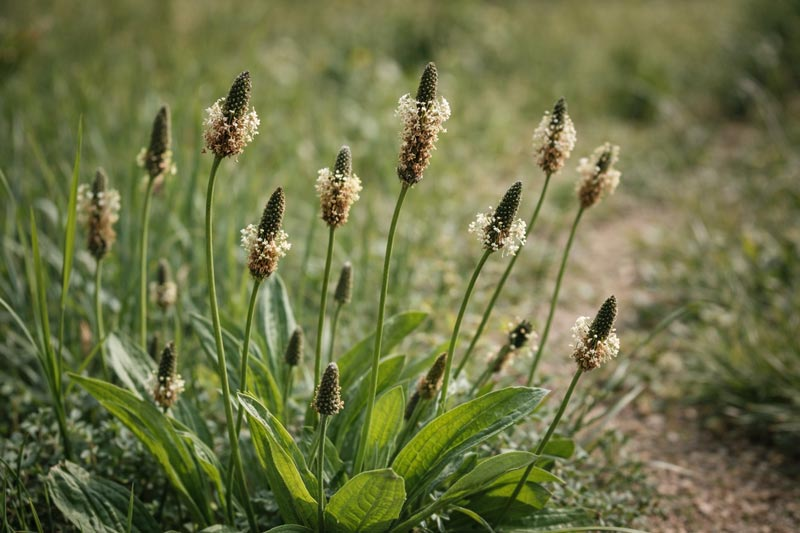
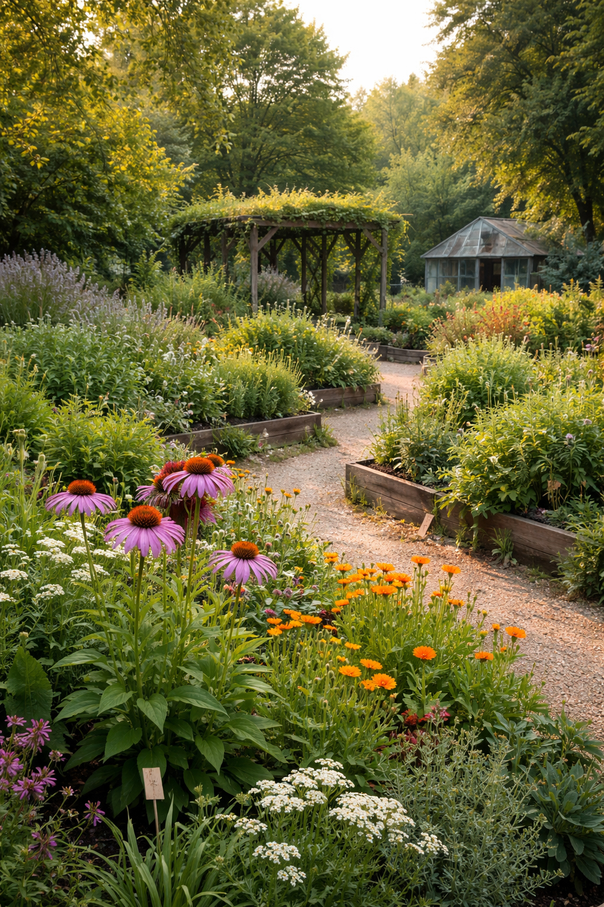
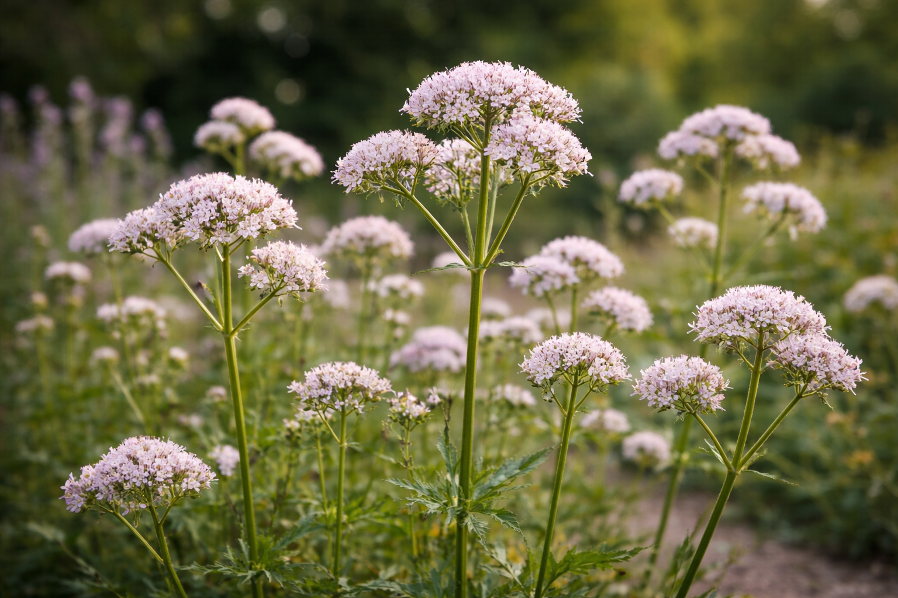
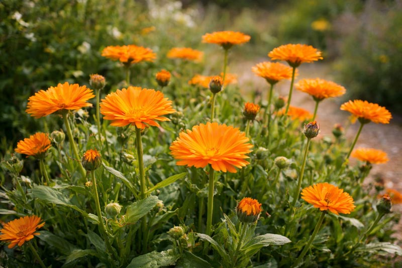

Spitzwegerich
Plantago lanceolata
Unscheinbar am Wegesrand — und doch eines der vielseitigsten Heilkräuter unserer Region.
Ein lebendiger Garten für Neugierige, Heilsuchende und alle, die langsamer werden wollen.

Unsere Geschichte
Inmitten der Stadt liegt unser Heilpflanzengarten — ein Ort, an dem altes Wissen auf lebendige Erde trifft. Seit 1987 pflegen wir hier über 400 Pflanzenarten, von Wildkräutern bis zu seltenen Heilpflanzen aus aller Welt.
Wir glauben, dass jede Pflanze eine Geschichte erzählt. Unsere Gärtnerinnen und Gärtner kennen diese Geschichten — und teilen sie gerne.
Der Garten ist kein Museum. Er wächst, blüht, verblüht und wächst wieder. Komm so oft du möchtest — er sieht jedes Mal anders aus.
Unsere Sammlung

Plantago lanceolata
Unscheinbar am Wegesrand — und doch eines der vielseitigsten Heilkräuter unserer Region.
Matricaria chamomilla
Der Klassiker der Volksmedizin. Beruhigend, entzündungshemmend, duftig.

Valeriana officinalis
Seit Jahrhunderten bewährt bei Unruhe und Schlafproblemen.

Calendula officinalis
Leuchtend orange, fast das ganze Jahr — eine der wichtigsten Wundpflanzen.
Plantago lanceolata
Unscheinbar am Wegesrand — und doch eines der vielseitigsten Heilkräuter unserer Region.
Matricaria chamomilla
Der Klassiker der Volksmedizin. Beruhigend, entzündungshemmend, duftig.
Valeriana officinalis
Seit Jahrhunderten bewährt bei Unruhe und Schlafproblemen.
Calendula officinalis
Leuchtend orange, fast das ganze Jahr — eine der wichtigsten Wundpflanzen.
Volksmedizin & Wirkung
Kein Hokuspokus — sondern Generationenwissen, das die Wissenschaft immer öfter bestätigt.
Aucubin und Acteoside machen ihn zum natürlichen Schleimlöser. Blätter direkt auf Mückenstiche legen wirkt.
Alpha-Bisabolol und Chamazulen wirken entzündungshemmend — innerlich wie äußerlich.
Valerensäure beeinflusst GABA-Rezeptoren — sanfter als Schlafmittel, kein Abhängigkeitspotenzial.
Flavonoide und Saponine fördern die Wundheilung. Eine Calendula-Salbe gehört in jede Hausapotheke.
Linalool wirkt nachweislich beruhigend auf das Nervensystem — als Duft und innerlich.
Hypericin und Hyperforin zeigen antidepressive Wirkung. Wechselwirkungen beachten — Rücksprache halten.
Führungen & Workshops
Alle Veranstaltungen finden draußen statt — und riechen gut.
Gemeinsam durch den Garten — und alle Pflanzen, die ihr kostenlos in freier Natur finden könnt.
Spitzwegerich, Thymian und Honig — ihr nehmt ein Glas echten Hustensaft mit nach Hause.
Wann sammelt man Blüten, wann Wurzeln? Volkskunde und modernes Wissen im Dialog.
Für Kinder ab 6: Pflanzen anfassen, riechen, bestimmen — und eine Kräuterbutter zubereiten.
Besuch & Kontakt
Wildwuchs Heilpflanzengarten
Gartenstraße 12
79106 Freiburg im Breisgau
Di – So: 9:00 – 18:00 Uhr
Mo: geschlossen
Nov – Feb: 10:00 – 16:00 Uhr
Erwachsene: 5 €
Kinder (6–14): 2 €
Kinder unter 6: frei
Familienticket: 12
€
hallo@wildwuchs-beispiel.de
+49 761 000 00 00